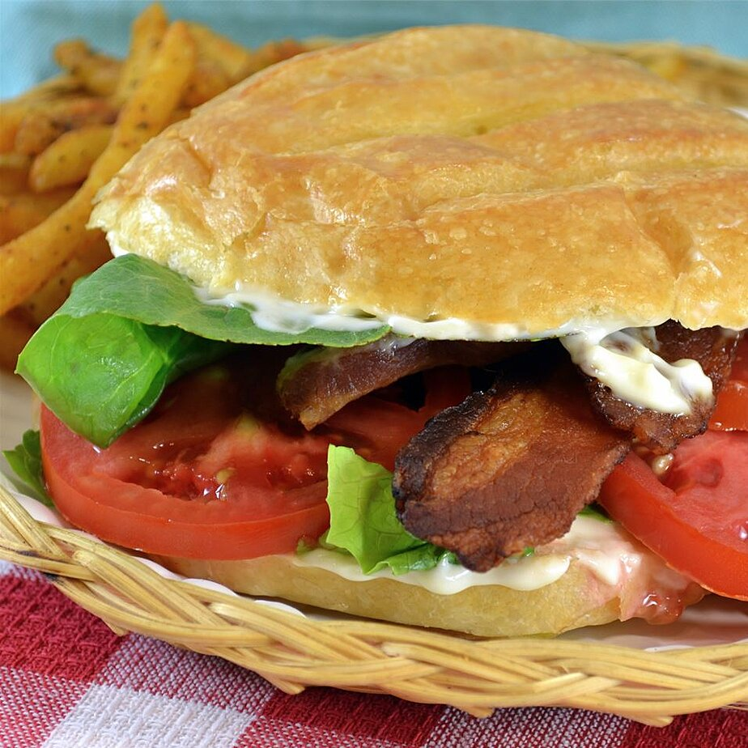

BLT

The basic classic: bacon, lettuce, and tomato -- nothing fancy, just delicious. (I personally use fake vegetarian bacon these days, and it's still really good!)
Ingredients
- 4 slices bacon
- 2 leaves lettuce
- 2 slices tomato
- 2 slices bread, toasted
- 1 tablespoon mayonnaise
Recipe
- Cook the bacon in a large, deep skillet over medium-high heat until evenly browned, about 10 minutes. Drain the bacon slices on a paper towel-lined plate.
- Arrange the cooked bacon, lettuce, and tomato slices on one slice of bread. Spread one side of remaining bread slice with the mayonnaise. Bring the two pieces together to make a sandwich.